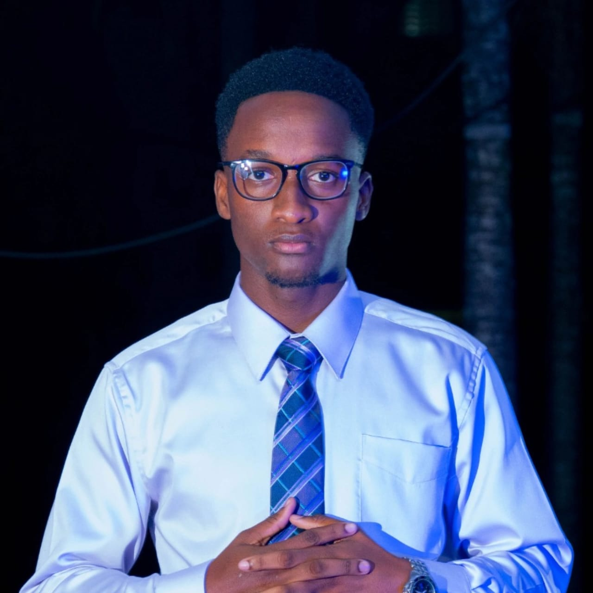

Shavane Davis
I am a third-year Computer Science student at The University of the West Indies, Mona. I am a hardworking, determined, and organized person who enjoys taking on new challenges and gaining new experiences. I am also interested in leadership and getting involved in activities that allow me to contribute to my university community. This academic year, I serve as the Faculty of Science and Technology Guild Committee (FSTGC) Vice President of Properties and Special Initiatives (VP-PSI), Director of Clubs and Societies, Director of Transportation, Deputy Block Representative of Block B - The Fraternity of Butchers, and President of the Taylor Hall Music Arts Society (TMAS). In my free time, I enjoy cooking, listening to music, and getting some rest.
I am interested in Web Development because I want to learn how websites are created and how they work. I think it is a useful skill that can help me create websites for personal, school, and business purposes. I also want to improve my technical skills and gain more experience in the field.